长隆集团 · 主题乐园多地专篇
长隆篇 · 广州 & 珠海 & 清远
一个品牌、多城开花。广州长隆主打「野生动物世界 + 欢乐世界 + 水上乐园 + 国际大马戏」的陆地乐园矩阵；珠海长隆以「海洋王国」为招牌，看鲸鲨、玩过山车、赏烟花水秀，并新开大型新物种式「飞船乐园」；清远长隆则是 2026 全新开业的「森林王国」度假区，住长颈鹿城堡酒店、泡森林温泉。一南一海一北，玩法完全不同，下面分城详细介绍该怎么去、玩什么。
🏙️ 广州 · 陆地乐园
🌊 珠海 · 海洋王国+飞船乐园
🌳 清远 · 森林王国（2026·新）
🎫 门票参考
🏙️广州长隆 · 一整座乐园之城
总体园区矩阵
野生动物世界、欢乐世界、水上乐园、飞鸟乐园、国际大马戏五位一体，亲子或年轻人都能各得其所；住进场内酒店还能提前半小时入园。
地址广州番禺 · 汉溪大道东299号
地铁 3/7 号线「汉溪长隆站」D/E 出口即度假区。广州南站地铁 7 号线 1 站约 5 分钟，非常近。
🎫门票价格参考 （元/人，以官网与当日为准）
| 园区 | 成人 | 儿童/长者 | 备注 |
|---|
| 野生动物世界 | 300–350 | 约 210 | 含小火车+空中缆车 |
| 欢乐世界 | 250–280 | 175–196 | 刺激项目需 1.4 米+ |
| 水上乐园 | 99 起 | 更低 | 仅夏季运营 |
| 国际大马戏 | 380 起 | 无免票 | 一人一座 |
| 飞鸟乐园 | 约 100–150 | 更低 | 相对小众清净 |
💡 多园套票更划算（如「欢乐世界 + 动物世界」约 440–510 元）；3 岁以下 / 身高 1 米以下免票，学生、长者、教师医护可享优惠票；提前 1 天网上购票、刷身份证入园最稳。
🚇怎么去 · 交通
🚇 地铁直达
3/7 号线汉溪长隆站 D/E 出口，出站即度假区入口，最省心。
🚌 免费穿梭巴士
园区各站约 8:30–22:30、约 10 分钟一班，直达各园区与酒店。
🚄 外地抵达
高铁「广州南站」→ 地铁 7 号线 1 站（约 5 分钟）进园最方便。
🚗 自驾
导航 P8 停车场，参考约 20 元/天；住度假区酒店通常可免费停车。
🎡玩什么 · 五大园区详览
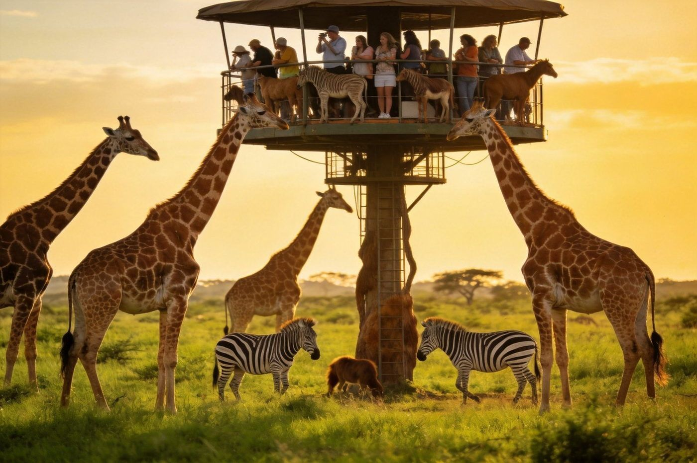
亲子首选 · AAAAA长隆野生动物世界
成人约 300–350 · 儿童约 210
亚洲规模领先的野生动物园，以「乘车+步行+缆车」三种方式近距离看动物，长颈鹿、熊猫、考拉、百虎都是明星。
玩法：喂长颈鹿 + 免费小火车穿越草原（坐右侧视野好）+ 空中缆车俯瞰全景，车与缆车均含票。
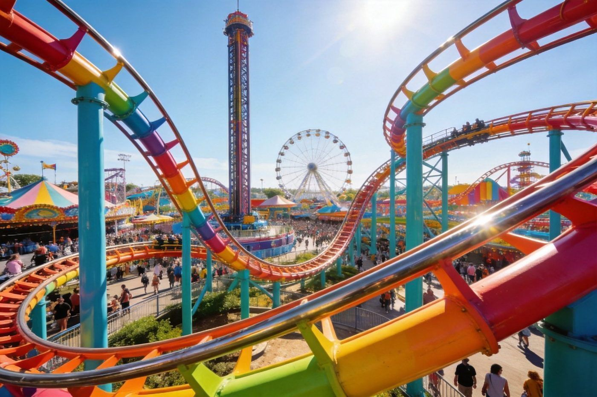
年轻人 · 刺激长隆欢乐世界
成人约 250–280 · 儿童/长者约 175–196
过山车天堂：垂直过山车、十环过山车、超级大摆锤、飓风飞椅接连上强度，也有旋转木马兼顾亲子。
玩法：刺激项目需 1.4 米以上；开园北门进直奔热门，用官方 APP 看实时排队更省时。
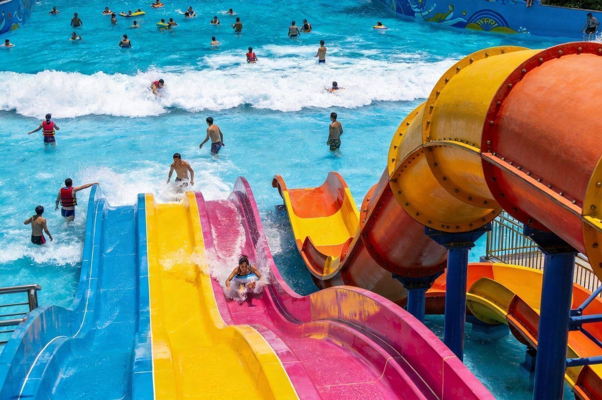
夏季限定长隆水上乐园
成人约 99 元起
世界级水上乐园：超级造浪池、大喇叭、蟒蛇滑道，夏天里的清爽快乐，仅 4–10 月运营。
玩法：提前安排更衣储物；部分酒店套餐首次入住日可免费畅玩，订房问清楚。
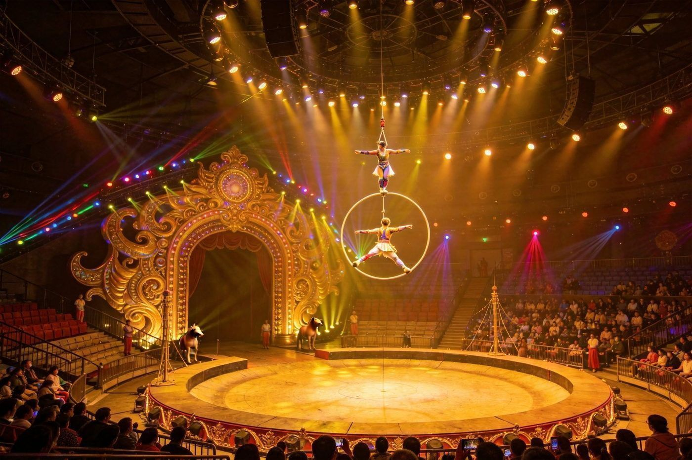
晚间必看长隆国际大马戏
成人约 380 起 · 一人一座
全景环形超大舞台，高空特技、环球摩托飞车、萌宠秀、小丑互动轮番上演，灯光舞美震撼，时长约 80–90 分钟。
玩法：通常 19:30 开演（旺季加场 17:00/20:00），提前 30 分钟入场占好座，VIP 可现场加价。
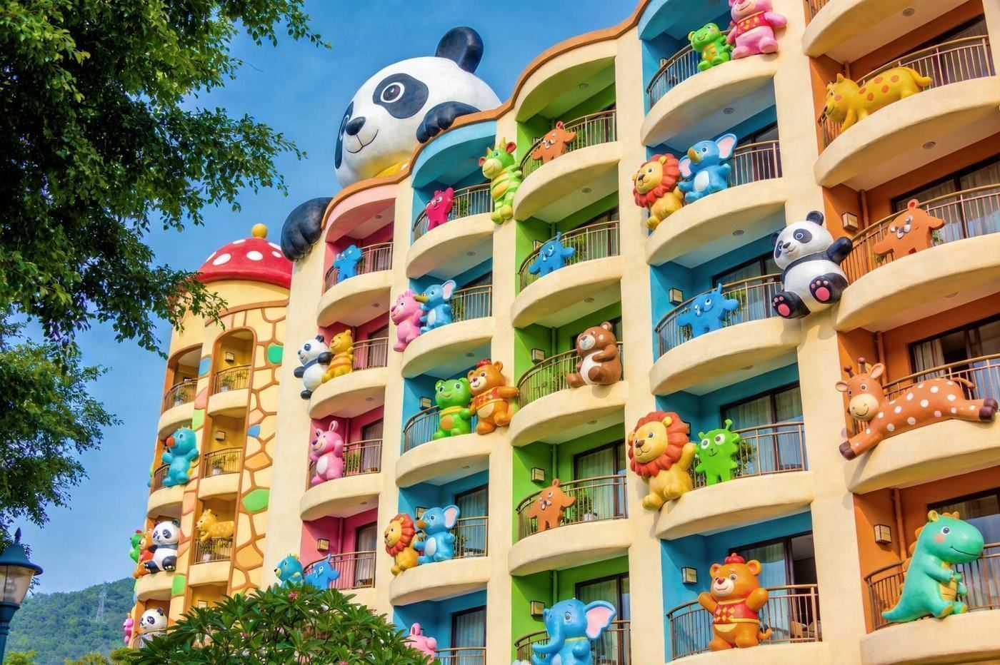
入住推荐主题酒店
熊猫/长隆酒店 · 房价随淡旺季波动
住在场内熊猫酒店等，出门即园区、免费穿梭车，通常可提前半小时入园避开人流，部分含门票与免费水上乐园。
适合：亲子深度游 / 想省通勤的年轻玩家。旺季一房难求，尽早订。
🗓️经典路线 · 一天怎么玩（动物世界+大马戏）
09:30动物世界入园：北门进，先坐免费小火车穿越草原（坐右侧），依次看青龙山、百虎山、考拉园、熊猫乐园。
14:00空中缆车：免费俯瞰全园动物，全景视角出片率高，稍作休整。
17:30出园用餐：提前吃顿晚饭，为晚上的大马戏留足时间。
19:30国际大马戏：提前 30 分钟入场占座，约 90 分钟的环球表演收尾。
🚀 年轻人玩法：Day1 欢乐世界（垂直过山车→十环→大摆锤）+ 夜间大马戏；Day2 睡到自然醒再战动物世界。9 月开学后游客大幅回落，票价更低、排队更短，是「人少体验好」的窗口。
🌊珠海长隆 · 海洋王国
总体海洋主题王国
以海洋动物+机动游戏为核的度假区，鲸鲨馆、过山车、烟花水秀是三大招牌；住企鹅/横琴湾酒店可提前入园。
地址珠海横琴 · 长隆旅游度假区
高铁「珠海长隆站」出站步行即达；珠海市区公交/专线、机场专线班车、自驾大型停车场均可达。
🎫门票价格参考 （元/人，以官方与当日为准）
| 票种 | 参考价 | 说明 |
|---|
| 成人标准票（一日） | 约 390–450 | 平日/周末略有差异 |
| 儿童票 / 长者票 | 约 275 起 | 儿童 1 米以下 / 3 岁以下免票 |
| 青年票（12–18 岁） | 约 310 | 需凭证件 |
| 双人 / 家庭票 | 两人约 590 起 | 2 大 1 小约 770 起 |
| 二日票 | 成人约 740 起 | 住主题酒店可两日多次入园 |
💡 提前在官方小程序/主流平台买票通常比现场便宜；旺季或想省排队可加购「快速通行手带」。
🐋玩什么 · 四大招牌详览
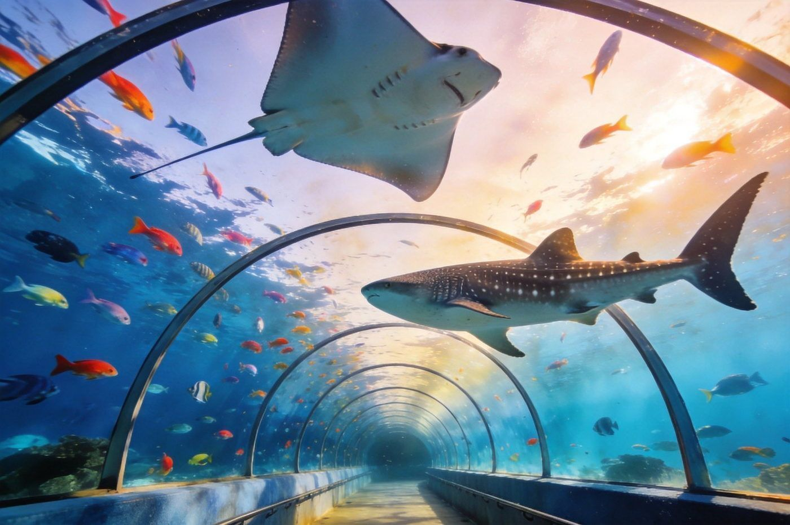
镇园之宝鲸鲨馆 · 世界最大水族馆之一
门票含 · 开园/上午人少
全球罕见的大体量水族缸，鲸鲨与魔鬼鱼缓缓游过，玻璃隧道让人身临大片海洋之中，成千上万条鱼环绕。
建议开园或上午第一时间去，人少好拍、不用挤。
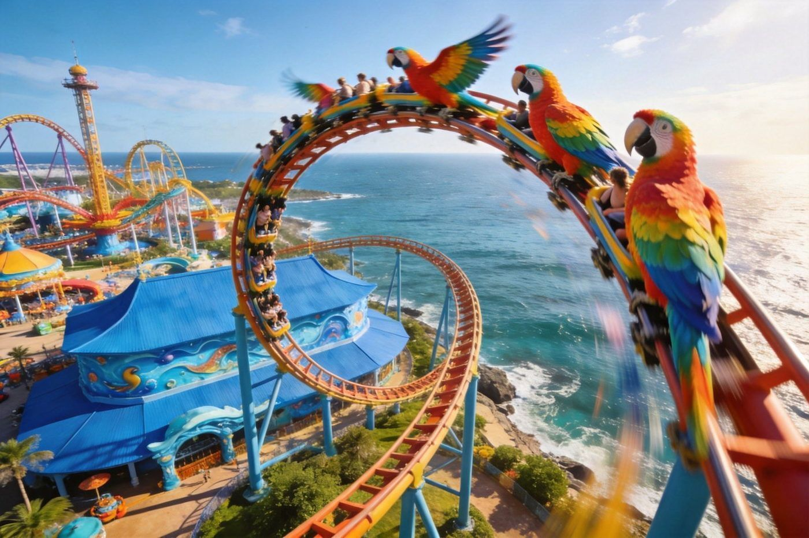
乐园最刺激鹦鹉过山车 · 冰山过山车
门票含
鹦鹉过山车 360° 翻转、园内最刺激，开园先冲避开排队；冰山过山车是水上俯冲带水花，记得备雨衣。
动线：上午玩项目人流少，下午转剧场与看展。
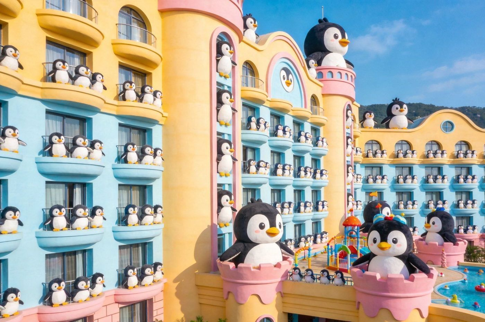
亲子首选主题酒店企鹅酒店 · 长隆横琴湾酒店
房价随淡旺季波动
企鹅酒店离园区大门最近、有专属通道可提前入园、帝企鹅餐厅边吃边看企鹅；横琴湾酒店有水世界+人造沙滩+海豚池更度假。
经济选马戏酒店；想度假选横琴湾；亲子首选企鹅酒店。
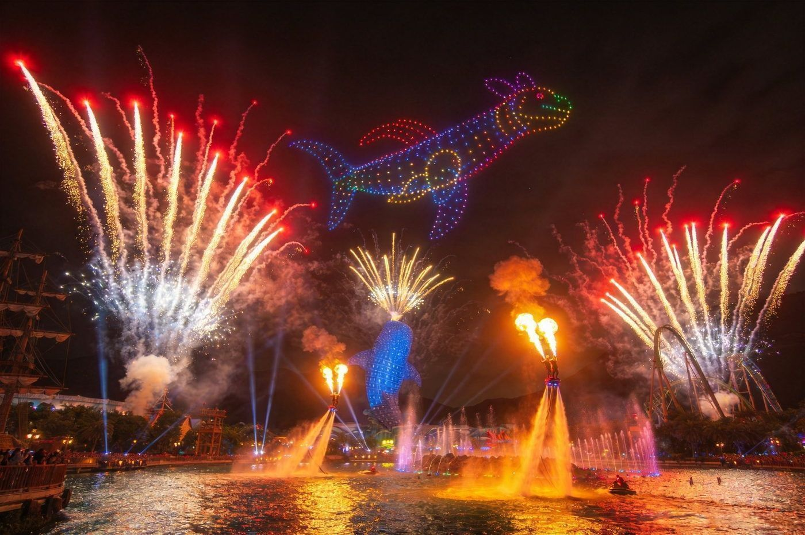
一天高潮海洋夜秀 · 烟花+无人机
19:30 / 20:00 开演
烟花 + 无人机编队 + 水上飞人在横琴海上空上演，白天还有海洋大巡游（约 15:30）与夜间花车巡游。
提前 20 分钟到横琴海边找位置看烟花压轴。
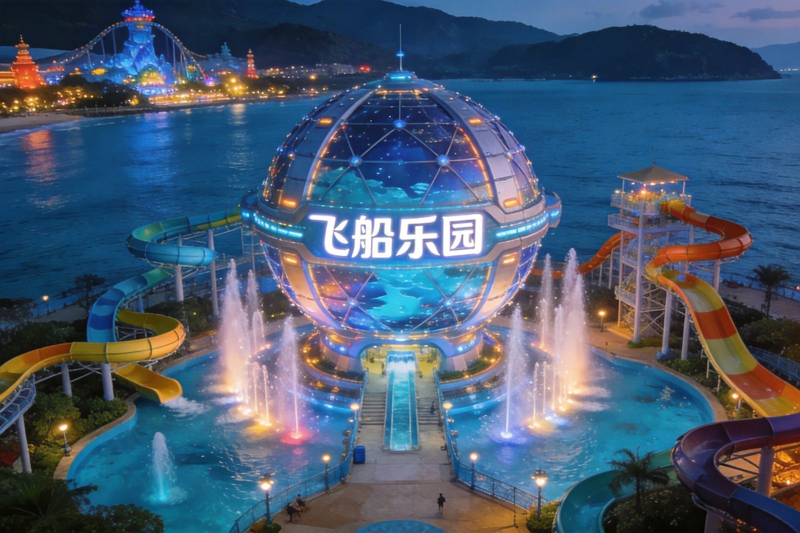
2023 新开园 · 创世界纪录珠海长隆飞船乐园
海洋王国旁全新室内主题区
2023 年落成的飞船乐园（FLIGHT PARK），主打沉浸式「星际飞船」主题的室内体验，创下多项吉尼斯世界纪录，全年恒温不受天气影响，适合亲子与全年游玩。
与海洋王国联动买套票更划算；室内为主，雨天/暑期高温首选。
🧭经典一日玩法（亲子友好）
09:30–10:00入园：从大门（海洋大街）进，先看头顶巨型屏幕海洋光影。
10:00–11:30鲸鲨馆 + 海底隧道：开园第一站人少，先把镇园之宝看完。
11:30–13:00极地探险·企鹅馆 + 午餐：企鹅/白鲸/北极熊区（室内偏冷带薄外套）。
13:30–15:30巨兽/剧场：海豚剧场/白鲸剧场按时刻表提前 20–30 分钟占位。
15:30–17:00海洋大巡游 + 游乐：下午海洋花车巡游，穿插儿童友好项目。
19:30–20:00海洋夜秀（烟花）：提前到横琴海边找位，看烟花压轴。
🏨 住宿：入园首选企鹅酒店（近园区、可提前入园）；横琴周边民宿更便宜、打车十几分钟；想度假选横琴湾酒店（海豚池+水世界+人造沙滩）。
🦒清远长隆 · 森林王国 （全新园区，2026 全面开园）
清远长隆森林王国是长隆集团全新打造的森林主题度假区，位于广东清远，主打「动物大越野」与沉浸式野生动物体验，2026 年全面开园，是长隆继广州、珠海之后的第三极。
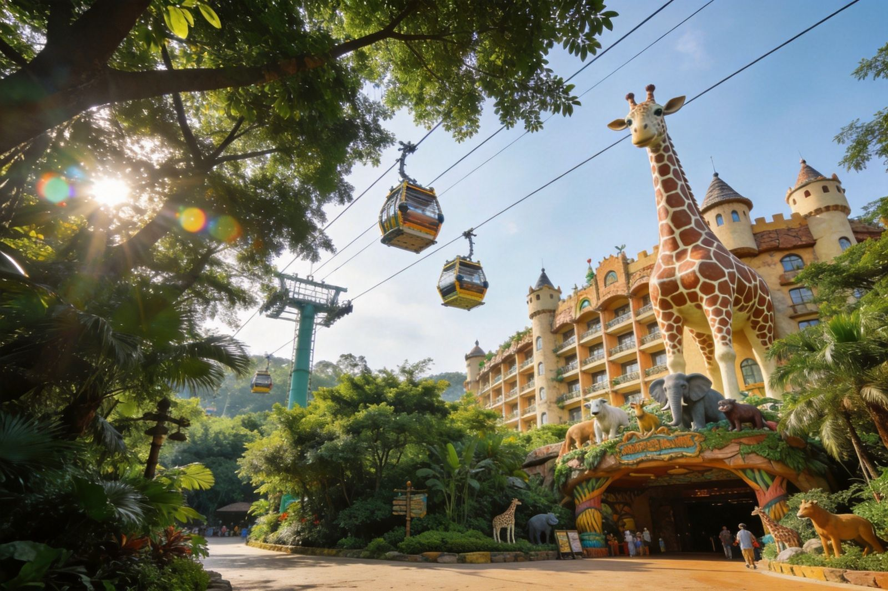
🦒动物大越野
全新开放的代表性项目，越野车深入草原动物栖息地，近距离看长颈鹿/斑马/角马等，是清远园区的招牌体验。
🏰长颈鹿城堡酒店
园区配套主题酒店，城堡造型，度假属性十足，亲子游客首选住宿。
♨️森林温泉
依托清远山林打造的温泉区，游玩一整天后放松泡汤，主打森林度假感。
🌳森林王国主题
与广州/珠海海洋、欢乐主题不同，聚焦野生动物保育与森林生态，形成差异定位。
🚆交通与衔接
🚄高铁
广清城际/高铁可达清远，从广州约 40 分钟–1 小时，适合粤北周边及广州出发一日或周末游。
🚗自驾
粤港澳大湾区各地自驾前往清远，高速直达，园区配套大型停车场。
⏱️建议时长
森林王国建议安排 1–1.5 天，配合酒店住宿+温泉体验更尽兴。
🏨 提示：清远长隆与广州/珠海长隆分属不同园区，需单独购票与规划交通；清远主打森林动物，若想一次体验海洋+陆地动物可在广州/珠海多停留。